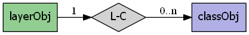
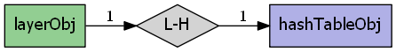
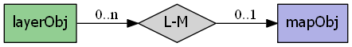

mapscript.layerObj¶
- class mapscript.layerObj(map: mapObj | None = None)¶
The LAYER object
Overview
The layerObj has the following relationships:
  Attributes
bandsitemchar The attribute from the index file used to select the source raster band(s) to be used - normally NULL for default bands processing
bindvalshashTableObjimmutable Relates to RFC59classgroupchar See CLASSGROUP
classitemchar the attribute used to classify layer data - see CLASSITEM
clusterclusterObjimmutable See CLUSTERcompositerLayerCompositer immutable See COMPOSITE
connectionchar layer connection or data source name - see CONNECTION
connectionoptionshashTableObjimmutable See CONNECTIONOPTIONSconnectiontypeenum MS_CONNECTION_TYPE the layer connection type - see CONNECTIONTYPE
datachar Layer data definition, values depend upon connectiontype - see DATA
debugint Enable debugging of layer-
MS_ONorMS_OFF(default) - see DEBUGencodingchar For iconving shape attributes, ignored if NULL or "utf-8" - see ENCODING
extentrectObjimmutable optional limiting extent for layer features - see EXTENTfilteritemchar Attribute defining filter - see FILTERITEM
footerchar filename to a template for result's footer - see FOOTER
groupchar Name of a group of layers - see GROUP
headerchar filename to a template for result's header - see HEADER
indexint immutable Index of layer within parent map's layers array
labelcacheint
MS_ON(default) orMS_OFF- see LABELCACHElabelitemchar attribute defining feature label text - see LABELITEM
labelmaxscaledenomdouble See LABELMAXSCALEDENOM
labelminscaledenomdouble See LABELMINSCALEDENOM
labelrequireschar Simple logical expression - see LABELREQUIRES
mapmapObjimmutable Reference to parent mapmaskchar See MASK
maxclassesint immutable Used to track of the maximum number of classes - see RFC-17
maxfeaturesint Maximum number of layer features that will be drawn - see MAXFEATURES
maxgeowidthdouble max map width (in map units) at which the layer should be drawn - see MAXGEOWIDTH
maxscaledenomdouble Minimum scale at which layer will be drawn - see MAXSCALEDENOM
metadatahashTableObjimmutable See METADATAminfeaturesizeint minimum feature size (in pixels) for shape
mingeowidthdouble min map width (in map units) at which the layer should be drawn - see MAXGEOWIDTH
minscaledenomdouble Maximum scale at which layer will be drawn - see MINSCALEDENOM
namechar See NAME - should be unique
numclassesint immutable Number of layer classes
numitemsint immutable Number of layer feature attributes (items)
numjoinsint immutable Number of layer joins
numprocessingint immutable Number of raster processing directives
offsitecolorObjtransparent pixel value for raster images - see OFFSITEplugin_librarychar Used to select the library to load by MapServer
plugin_library_originalchar this is needed for Mapfile writing
postlabelcacheint
MS_ONorMS_OFF(default) - see POSTLABELCACHErefcountint immutable reference counting, RFC24
rendermodeenum MS_RENDER_MODE
MS_FIRST_MATCHING_CLASS- default and historic MapServer behavior,MS_ALL_MATCHING_CLASSES- SLD behaviorrequireschar Context expressions, simple enough to not use expressionObj - see REQUIRES
sizeunitsint applies to all classes - see SIZEUNITS
startindexint Feature start index - used for paging
statusint See STATUS
MS_ON,MS_OFForMS_DEFAULTstyleitemchar item to be used for style lookup - can also be 'AUTO' - see STYLEITEM
symbolscaledenomdouble scale at which symbols are default size - see SYMBOLSCALEDENOM
templatechar See TEMPLATE - global template, used across all classes
thisownThe membership flag
tileindexchar layer index file for tiling support - see TILEINDEX
tileitemchar attribute defining tile paths - see TILEITEM
tilesrschar name of the attribute that contains the SRS of an individual tile - see TILESRS
tolerancedouble search buffer for point and line queries (in toleranceunits) - see TOLERANCE
toleranceunitsint See TOLERANCEUNITS
transformint
MS_TRUE(default) orMS_FALSEwhether or not layer data is to be transformed to image units - see TRANSFORMtypeenum MS_LAYER_TYPE the layer type - see TYPE
unitsint units of the layer - see UNITS
utfdataexpressionObjimmutable See UTFDATAutfitemchar See UTFITEM
utfitemindexint See CLASSITEM
validationhashTableObjimmutable See VALIDATIONMethods
- __init__(map: mapObj | None = None)[source]¶
A
layerObjis associated withmapObj. An instance oflayerObjcan exist outside of amapObj
- addFeature(shape: shapeObj) int[source]¶
Add a new inline feature on a layer. Returns -1 on error. TODO: Is this similar to inline features in a mapfile? Does it work for any kind of layer or connection type?
- addProcessing(directive: char const) void[source]¶
Adds a new processing directive line to a layer, similar to the PROCESSING directive in a map file. Processing directives supported are specific to the layer type and underlying renderer.
- applySLD(sld: char, stylelayer: char) int[source]¶
Apply the SLD document to the layer object. The matching between the SLD document and the layer will be done using the layer’s name. If a stylelayer argument is passed (argument is optional), the NamedLayer in the SLD that matches it will be used to style the layer. See SLD HOWTO for more information on the SLD support.
- applySLDURL(sld: char, stylelayer: char) int[source]¶
Apply the SLD document pointed by the URL to the layer object. The matching between the SLD document and the layer will be done using the layer’s name. If a stylelayer argument is passed (argument is optional), the NamedLayer in the SLD that matches it will be used to style the layer. See SLD HOWTO for more information on the SLD support.
- clearProcessing() int[source]¶
Clears the layer’s raster processing directives. Returns the subsequent number of directives, which will equal
MS_SUCCESSif the directives have been cleared.
- clone() layerObj[source]¶
Return an independent copy of the layer with no parent map.
Note
In the Java & PHP modules this method is named
cloneLayer.
- convertToString() char[source]¶
Output the
layerObjobject as a Mapfile string. Provides the inverse option forlayerObj.updateFromString().
- draw(map: mapObj, image: imageObj) int[source]¶
Renders this layer into the target image, adding labels to the cache if required. Returns
MS_SUCCESSorMS_FAILURE.
- drawQuery(map: mapObj, image: imageObj) int[source]¶
Draw query map for a single layer into the target image. Returns
MS_SUCCESSorMS_FAILURE.
- executeWFSGetFeature(layer: layerObj) char[source]¶
Executes a GetFeature request on a WFS layer and returns the name of the temporary GML file created. Returns an empty string on error.
- generateSLD() char[source]¶
Returns an SLD XML string based on all the classes found in the layer (the layer must have
STATUS ON`).
- getClassIndex(map: mapObj, shape: shapeObj, classgroup: int | None = None, numclasses: int = 0) int[source]¶
Get the class index for a shape in the layer.
- getExtent() rectObj[source]¶
Fetches the extents of the data in the layer. This normally requires a full read pass through the features of the layer and does not work for raster layers.
- getItem(i: int) char[source]¶
Returns the requested item. Items are attribute fields, and this method returns the item name (field name). The numitems field contains the number of items available, and the first item is index zero.
- getItemDefinitions()[source]¶
Python MapScript only
Return item (field) names and their types if available. Field types are specified using GML metadata and can be one of the following:
Integer|Long|Real|Character|Date|Boolean
- getItemType(i: int) char[source]¶
Returns the requested item’s field type. A layer must be open to retrieve the item definition.
Pass in the attribute index to retrieve the type. The layer’s numitems property contains the number of items available, and the first item is index zero.
- getNumFeatures() int[source]¶
Returns the number of inline features in a layer. TODO: is this really only online features or will it return the number of non-inline features on a regular layer?
- getNumResults() int[source]¶
Returns the number of entries in the query result cache for this layer.
- getResult(i: int) resultObj[source]¶
Fetches the requested query result cache entry, or NULL if the index is outside the range of available results. This method would normally only be used after issuing a query operation.
- getResults() resultCacheObj[source]¶
Returns a reference to layer’s result cache. Should be NULL prior to any query, or after a failed query or query with no results.
- getShape(record: resultObj) shapeObj[source]¶
Get a shape from layer data. Argument is a result cache member from
layerObj.getResult()
- getWMSFeatureInfoURL(map: mapObj, click_x: int, click_y: int, feature_count: int, info_format: char) char[source]¶
Return a WMS GetFeatureInfo URL (works only for WMS layers) clickX, clickY is the location of to query in pixel coordinates with (0,0) at the top left of the image. featureCount is the number of results to return. infoFormat is the format the format in which the result should be requested. Depends on remote server’s capabilities. MapServer WMS servers support only “MIME” (and should support “GML.1” soon). Returns “” and outputs a warning if layer is not a WMS layer or if it is not queryable.
- isVisible() int[source]¶
Returns
MS_TRUEorMS_FALSEafter considering the layer status, minscaledenom, and maxscaledenom within the context of the parent map.
- moveClassDown(index: int) int[source]¶
The class specified by the class index will be moved up into the array of classes. Returns
MS_SUCCESSorMS_FAILURE. For examplemoveClassDown(1)will have the effect of moving class 1 down to position 2, and the class at position 2 will be moved to position 1.
- moveClassUp(index: int) int[source]¶
The class specified by the class index will be moved up in the array of classes. Returns
MS_SUCCESSorMS_FAILURE. For examplemoveClassUp(1)will have the effect of moving class 1 up to position 0, and the class at position 0 will be moved to position 1.
- nextShape() shapeObj[source]¶
Called after
layerObj.whichShapes()has been called to actually retrieve shapes within a given area returns a shape object orMS_FALSEExample of usage:mapObj map = new mapObj("d:/msapps/gmap-ms40/htdocs/gmap75.map"); layerObj layer = map.getLayerByName('road'); int status = layer.open(); status = layer.whichShapes(map.extent); shapeObj shape; while ((shape = layer.nextShape()) != null) { ... } layer.close();
- open() int[source]¶
Opens the underlying layer. This is required before operations like
layerObj.getResult()will work, but is not required before a draw or query call.
- queryByAttributes(map: mapObj, qitem: char, qstring: char, mode: int) int[source]¶
Query layer for shapes that intersect current map extents. qitem is the item (attribute) on which the query is performed, and qstring is the expression to match. The query is performed on all the shapes that are part of a CLASS that contains a TEMPLATE value or that match any class in a layer that contains a LAYER TEMPLATE value. Note that the layer’s FILTER/FILTERITEM are ignored by this function. mode is
MS_SINGLEorMS_MULTIPLEdepending on number of results you want. ReturnsMS_SUCCESSif shapes were found orMS_FAILUREif nothing was found or if some other error happened.
- queryByFeatures(map: mapObj, slayer: int) int[source]¶
Perform a query set based on a previous set of results from another layer. At present the results MUST be based on a polygon layer. Returns
MS_SUCCESSif shapes were found orMS_FAILUREif nothing was found or if some other error happened.
- queryByFilter(map: mapObj, string: char) int[source]¶
Query by the filter string. For querying, we switch layer status ON and then back to original value before returning.
- queryByIndex(map: mapObj, tileindex: int, shapeindex: int, bAddToQuery: int = 0) int[source]¶
Pop a query result member into the layer’s result cache. By default clobbers existing cache. Returns
MS_SUCCESSorMS_FAILURE
- queryByPoint(map: mapObj, point: pointObj, mode: int, buffer: double) int[source]¶
Query layer at point location specified in georeferenced map coordinates (i.e. not pixels). The query is performed on all the shapes that are part of a CLASS that contains a TEMPLATE value or that match any class in a layer that contains a LAYER TEMPLATE value. Note that the layer’s FILTER/FILTERITEM are ignored by this function. mode is
MS_SINGLEorMS_MULTIPLEdepending on number of results you want. ReturnsMS_SUCCESSif shapes were found orMS_FAILUREif nothing was found or if some other error happened.
- queryByRect(map: mapObj, rect: rectObj) int[source]¶
Query layer using a rectangle specified in georeferenced map coordinates (i.e. not pixels). The query is performed on all the shapes that are part of a CLASS that contains a TEMPLATE value or that match any class in a layer that contains a LAYER TEMPLATE value. Note that the layer’s FILTER/FILTERITEM are ignored by this function. The
MS_MULTIPLEmode is set by default. ReturnsMS_SUCCESSif shapes were found orMS_FAILUREif nothing was found or if some other error happened.
- queryByShape(map: mapObj, shape: shapeObj) int[source]¶
Query layer based on a single shape, the shape has to be a polygon at this point. Returns
MS_SUCCESSif shapes were found orMS_FAILUREif nothing was found or if some other error happened.
- removeClass(index: int) classObj[source]¶
Removes the class at index and returns a copy, or NULL in the case of a failure. Note that subsequent classes will be renumbered by this operation. The numclasses field contains the number of classes available.
- setConnectionType(connectiontype: int, library_str: char const) int[source]¶
Changes the connectiontype of the layer and recreates the vtable according to the new connection type. This method should be used instead of setting the connectiontype parameter directly. In case when the layer.connectiontype =
MS_PLUGINthe library_str parameter should also be specified so as to select the library to load by MapServer. For the other connection types this parameter should be set to an empty string “”.
- setExtent(minx: double = -1.0, miny: double = -1.0, maxx: double = -1.0, maxy: double = -1.0) int[source]¶
Sets the extent of a layer. Returns
MS_SUCCESSorMS_FAILURE
- setFilter(filter: char) int[source]¶
Sets a filter expression similarly to the FILTER expression in a map file. Returns
MS_SUCCESSorMS_FAILUREif the expression fails to parse.
- setItems(items: char, numitems: int) int[source]¶
Set the items to be retrieved with a particular shape.
- setOpacity(opacity: int) void[source]¶
Sets an opacity for the layer, where the value is an integer in range [0, 100]. A new COMPOSITE block is generated, containing this
OPACITYvalue.
- setProcessingKey(key: char const, value: char const) void[source]¶
Adds or replaces a processing directive of the form “key=value”. Unlike the
layerObj.addProcessing()function, this will replace an existing processing directive for the given key value. Processing directives supported are specific to the layer type and underlying renderer.
- setProjection(proj4: char) int[source]¶
Set the layer projection using a PROJ format projection definition (i.e. “+proj=utm +zone=11 +datum=WGS84” or “init=EPSG:26911”). Returns
MS_SUCCESSorMS_FAILURE
- setWKTProjection(wkt: char) int[source]¶
Set the layer projection using OpenGIS Well Known Text format. Returns
MS_SUCCESSorMS_FAILURE
- updateFromString(snippet: char) int[source]¶
Update a
layerObjfrom a string snippet. ReturnsMS_SUCCESSorMS_FAILURE
- whichShapes(rect: rectObj) int[source]¶
Performs a spatial, and optionally an attribute based feature search. The function basically prepares things so that candidate features can be accessed by query or drawing functions (e.g using
layerObj.nextShape()function). ReturnsMS_SUCCESS,MS_FAILUREorMS_DONE. MS_DONE is returned if the layer extent does not overlap rect.